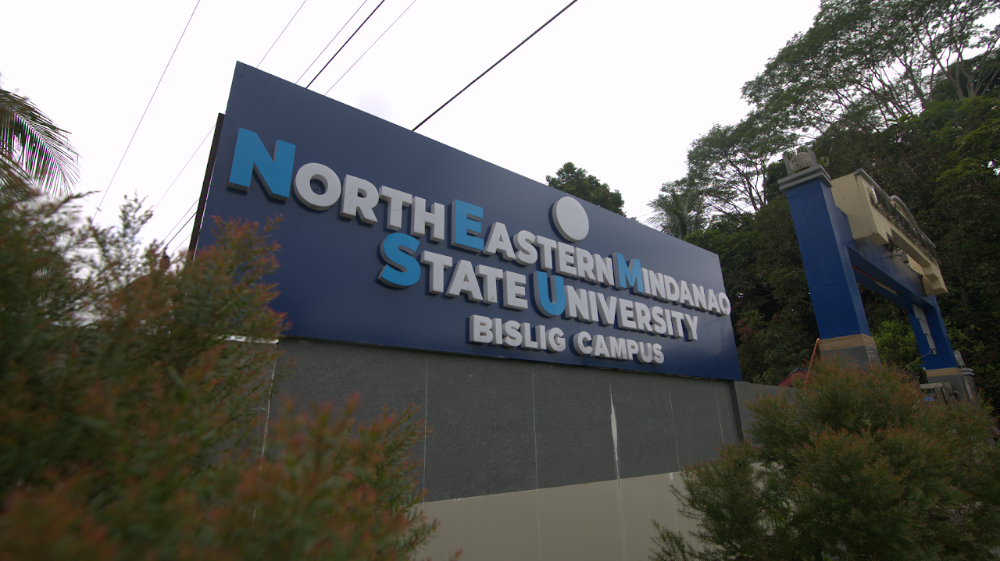

NEMSU-Bislig Campus was formerly known as University of Southeastern Philippines – Bislig Campus, which took three years in transition until terms in the Memorandum of Agreement inked in 2018 came to an end in 2021. The Campus is located 14 kilometers Northwest of Brgy. Mangagoy and is within the allocated General Institutional Zone (covering an area of 50.7 ha in a 3.55 km Perimeter) per the 2017-2026 Comprehensive Land Use Plan (CLUP) of Bislig City.
The campus would support human resources of Bislig – PAIC Industry Development Plan comprising light to heavy components of agri-based, agroforestry based, aqua-marine based, mineral-based, and footloose industry. Thus, BS Forestry, BS Mechanical Engineering, BS Electrical Engineering, BS Civil Engineering, and Technology courses have been vital to implementing the plan. In 2008, the Bachelor of Secondary Education Major in English was created in response to growing demand and increased opportunities to the far-flung area residents of Bislig City to take the course. In 2018, the Technology course was upgraded to Bachelor of Technical Vocational Teacher Education as part of the answers to the need for technical skills resources inside and outside the Caraga Region.
NEMSU-Bislig aims to be the Center for Agroforestry, Paper and Wood Industry. Currently, five (5) of its programs passed the AACCUP Level II accreditation.